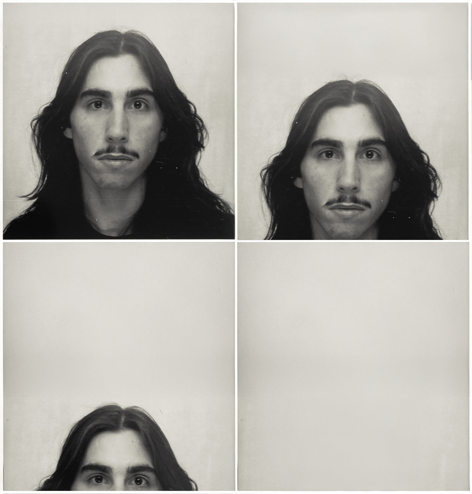

I'm Diogo

, a Communication Designer based in Copenhagen, specializing in visual identity, editorial design, and creative direction. Growing up in Lisbon's artistic scene and shaped by inclusive, creative spaces, I’ve developed a strong foundation in visual storytelling and a passion for socially driven projects.
With a background in Design and Business, as well as studies in Furniture Design, my experience spans branding, editorial, and collaborative projects. Rooted in strategic thinking and research-driven design, while embracing disruption, my work balances intentional design with a critical approach, building purposeful identities and communication systems that connect both aesthetically and conceptually.
Visual Identity
Art Direction
Creative Direction
Editorial Design
Layout & Print
Strategy & Research
Brand Activation
Art Direction
Creative Direction
Editorial Design
Layout & Print
Strategy & Research
Brand Activation